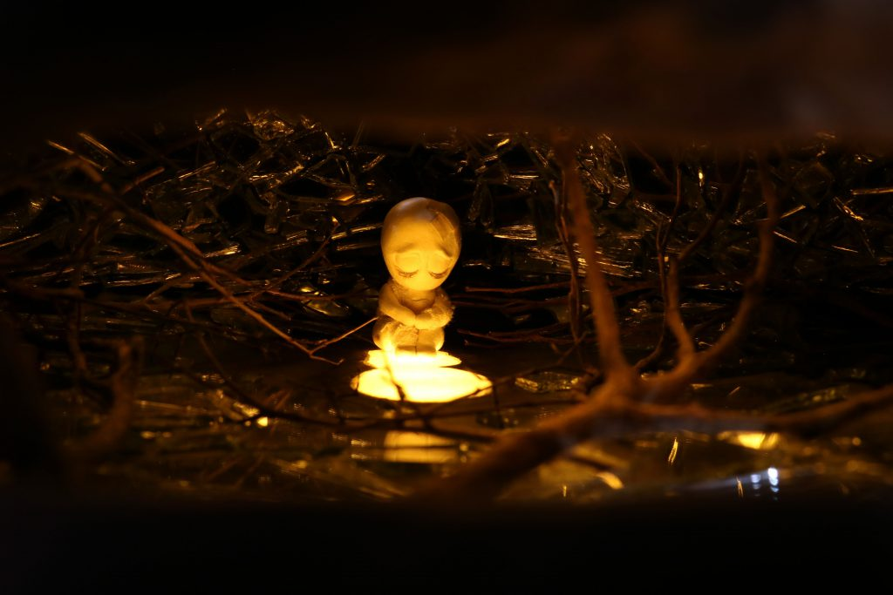
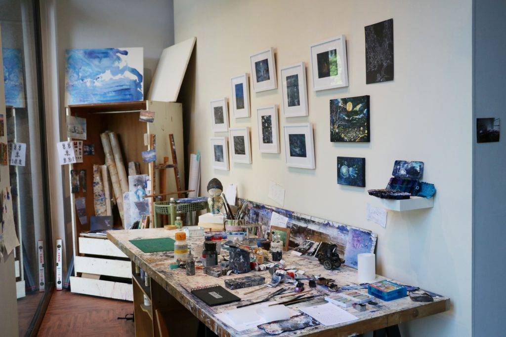
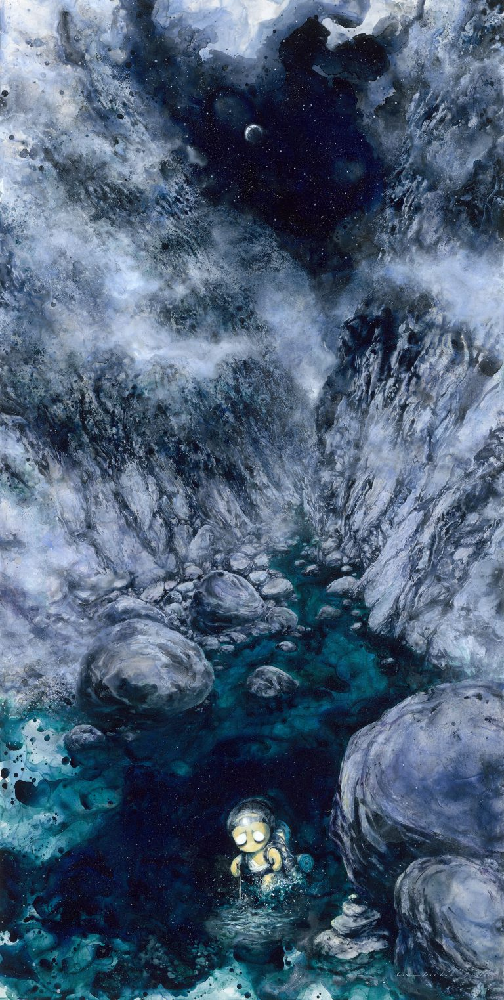

.jpg)
陶怡軒
2018/11/01
【記者陶怡軒台北報導】繁華的西門町商圈，人潮隨著製圖膠片上渲染的水漬流動，長達2公尺的橫幅，帶領觀者進入熟悉又迷幻的台北街頭。畢業於國立台灣師範大學美術學系碩士班水墨組的藝術家林葆靈，於10月20日起在索卡藝術中心舉辦個展《夜未央》，以夜景作為主題，透過渲染手法揉合夜晚中的光與影。

〈夜的變奏曲Ⅱ〉以長橫幅描繪西門町夜景，同時畫面更以鏡像呈現，希望能呈現所見非真實的意象。 圖／林葆靈提供本次展覽展出多件以製圖膠片為媒材的作品，製圖膠片原本為建築師用以繪製草圖的工具。林葆靈解釋，製圖膠片不似紙材具有易吸水的纖維，顏料能完整留在膠片表面，利於顏料的渲染。同時林葆靈提到，他利用製圖膠片半透明的特性，在膠片的兩面作畫，呈現畫面的層次感，「現實的風景，有時候遠處的東西也顯得比較濛、比較霧。」
補充說明一下團隊的成立動機，他們說那時候他們去淨灘，發現海灘上有好多紙容器垃圾，因此引發他們的創作動機，真的是一群對地球很有熱忱、也很有動力的人！林葆靈表示，部分作品採用長達2公尺的橫幅與高遠遼闊的取景，是承襲自中國傳統的水墨畫橫軸，希望能藉此呈現出較抽離的觀看視角，林葆靈說：「常常覺得自己跟社會、人群有點格格不入。」因此他常會採用比較遠的觀看角度構圖。
 除了畫作，現場更有數樣黏土捏製展品，〈沒有名字的小傢伙-永夜〉以碎鏡子和枯枝營造感傷的氛圍。 圖／陶怡軒攝「我常處理夜晚的強烈光影，漸漸發現光跟影是一體兩面的，我在作品中主要是追求對立的統一、融合。」林葆靈解釋，期待觀者透過作品中大量暈染開的色彩，感受到光影並不是極端的對立，他也以此期許自己能接受事物的不同面向。
索卡藝術中心展覽行銷呂燕妮表示，展覽大致劃分為城市和自然兩個展區，呈現林葆靈筆下夜景的不同風情，「看他的作品，能感受到在抽象和具象交合下，很夢幻的情感意境。」展場入口更複製了林葆靈的工作室空間，希望民眾觀展時，先看到藝術產製的過程，再循著空間動線，慢慢進入藝術家的內心世界。
我很喜歡展覽的這個佈置，它在門口的櫥窗位置，特別能吸引民眾走進來。在這個區域可以看到藝術家平常作畫的工具、空間，除此之外還有一些創作過程中意外的產物，像是藝術家拿來調色的盒子，裡面剩餘的壓克力顏料長久累積下來，最後可以整塊剝落下來，像是一塊一塊色彩鮮艷的巧克力，彷彿成為藝術家不經意創作出來的作品。 展場入口仿製了林葆靈的工作室，讓民眾除了看見藝術成品，更能接近產製的過程。 圖／陶怡軒攝民眾邱奕辰表示，作品〈黑暗中過河Ⅲ〉令他感到印象深刻，該畫作描繪藝術家的一次溯溪體驗，讓他感受到創作中的故事。「從繁華的都市到山谷，搭配藝術家自己經歷下表現的夜景的詮釋是很全面的。」邱奕辰認為，在林葆靈的作品中可以體會到創作者不同的觀看角度。
 〈黑暗中過河Ⅲ〉講述林葆靈的溯溪體驗，人物右下方描繪的疊石，指引正確的方向，是一種讓人安心的象徵。 圖／林葆靈提供採訪後記
當初報這條線時，因為採主說幾年前這位藝術家曾上節目進行訪談，對於創作內容有很完整的說明，因此如果我不能找到比較特別的切點，可能就沒辦法讓我過這條線，因此我找出那個訪談節目，把將近一小時的影片看完，打了一千多字的筆記後，決定以節目中較沒談到的創作媒材作為切點，才說服採主過線。
到藝廊之後見到林葆靈本人，覺得他真的是非常溫柔的人，也因此他筆下的世界看起來都特別美吧，即使創作中有較為黑暗面的部分，仍舊用浪漫的色彩與柔和的筆觸呈現出來。此外，採訪當天他主動提議要為我導覽，一件件說明畫作背後的意涵。我仔細的在畫作前觀賞，對很多細節提問，他也相當有耐心的為我解說，我覺得是一個相當難得的經驗，以前從未有機會如此完整的觀看一個展覽，又能跟創作者交流討論。
因為訪問當中得到很詳細的素材，回來之後我洋洋灑灑寫了1000多字的文稿，但因為篇幅問題，在與採主惟中討論後，才縮減到現在的篇幅。可是我很珍惜這次的經驗，希望自己能一直記住這種情緒，很用心地想去了解一個藝術家的內心，希望能為他寫出一篇精彩的報導。即使我的文筆上仍有很多需要改進的地方，但仍然是一篇我自己很珍惜的作品。
謝謝藝術家耐心又仔細地進行導覽，謝謝幫忙修改文章給予意見的採主，謝謝願意受訪的民眾（因為已經離開展有些時日，當天又是禮拜六，位在內湖的藝廊真的沒什麼人），謝謝自己也用心的感受這些作品，投入在展場之中。
 陶怡軒
陶怡軒.jpg)